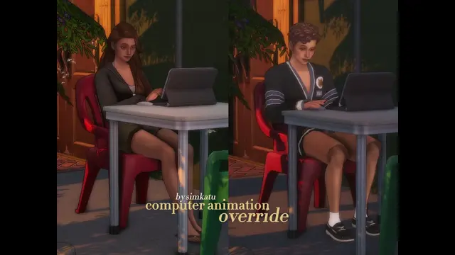
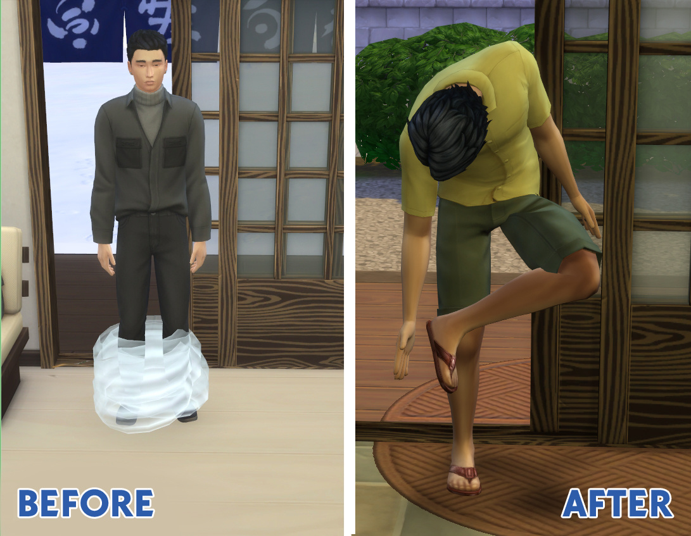
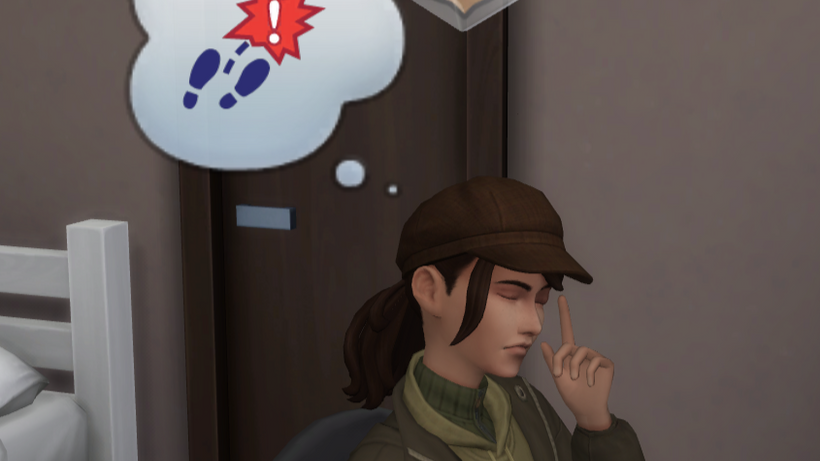
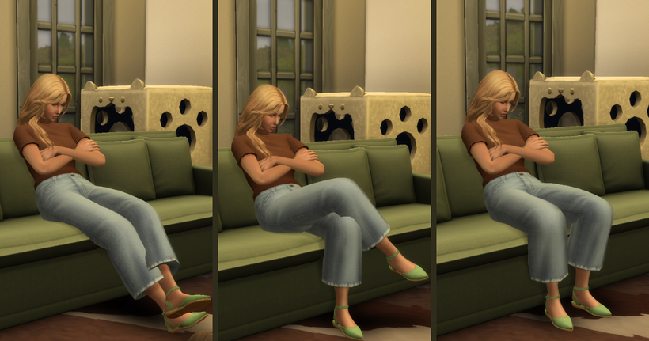

iPhone 17 pro Max Override
手機替換
備用載點 ｜無
下載版本 ｜無
下載日期 ｜2026.05.25
只能下載一種顏色

只能下載一種顏色

其他附加檔案
S3M x PBCC_ANIMATIONS.package
⤷ 新動畫 (必須下載)
S3M x PBCC_BG_invisible_crib.package
⤷ 隱形嬰兒床 (必須下載)
S3M x PBCC_BG(2)_crib.package
⤷ 嬰兒床替換 (必須根據DLC下載)
S3M x PBCC_BABY_BOTTLE.package
⤷ 預設奶瓶替換
需下載XML注入器
其他附加檔案
simkatu_functional_mini_easels.package
⤷ 功能性迷你畫架 (使用前請輸入 bb.moveobjects )
simkatu_canvas_frame_override_v1.package
⤷ 畫布厚度與畫框樣式 (擇一下載)


擁有生與死DLC還需另外下載
simkatu_reading_addon_fix_lifedeath.package




可同時下載 Male-FreshenUp.package (男性版本)

2種版本請擇一下載
NoRouteFailAnimation.package
⤷ 動作替換
lazarusinashes_NoRouteFailAnimation.package
⤷ 無動作


需下載XML注入器
共3種動畫隨機播放 (含孕婦版本)